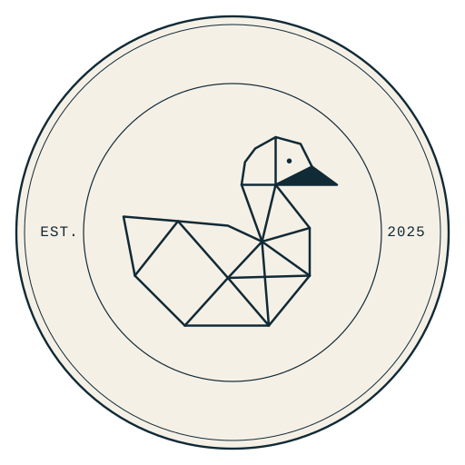
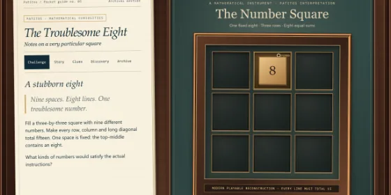
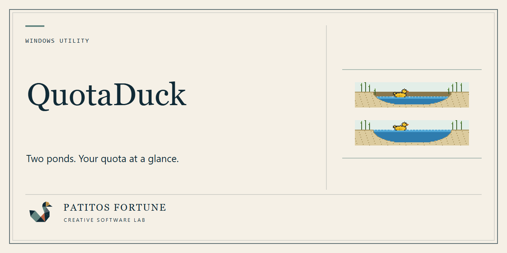

Puzzle Systems
A mathematical puzzle project built around expression discovery, progression, and carefully validated puzzle generation.
Puzzles · MathematicsCreative Software Lab · Malta · Est. 2025
Patitos Fortune is a small, independent software lab working across games, data, research, and decision tools.

Selected work
We like problems with enough structure to test, enough uncertainty to explore, and enough personality to be worth building.
A mathematical puzzle project built around expression discovery, progression, and carefully validated puzzle generation.
Puzzles · MathematicsA knowledge-discovery system for turning outside ideas into tested, reusable methods instead of a pile of bookmarks.
Research · LearningDecision-support software that turns complex game systems into explainable, testable recommendations.
Tools · Decision systemsSmall experimental systems for game design, probability, behavioural modelling, and quantitative analysis.
Simulation · DataFrom the lab · Games & apps
Browse the games, puzzles and small utilities taking shape at Patitos Fortune. Each has its own character, all share the same curiosity.

Little challenges, intriguing mechanisms and discoveries to unfold.
See Games & puzzles
Two ponds. Your quota at a glance. A lightweight Windows utility for viewing Claude Code and Codex usage limits without leaving your desktop.
See apps & toolsOpen source · MIT licence
A free template for building your own learning library with an AI coding assistant. You say what you want to learn. The assistant proposes topics backed by real sources and writes short lessons for the ones you accept. Everything stays as plain static files that you own.
Knowledge takes root.
Propose a topic review the evidence grow your library.
A template and a workflow, not a service. No accounts, no server, and the site never calls an AI.
You curate. Nothing becomes a lesson until you accept it.
Read the publishing notes first: a published copy can expose your profile and progress files.
How we work
We use AI agents to turn specifications into tested artefacts, challenge assumptions, review evidence, and accelerate iteration without outsourcing judgement.
Specify before scaling.
Test claims, not vibes.
Keep the human decision visible.
People
Product, games, and quantitative research.
Data, analytics, and decision systems.
Say hello